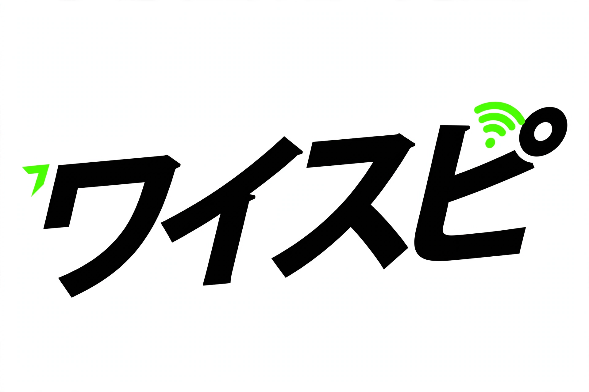
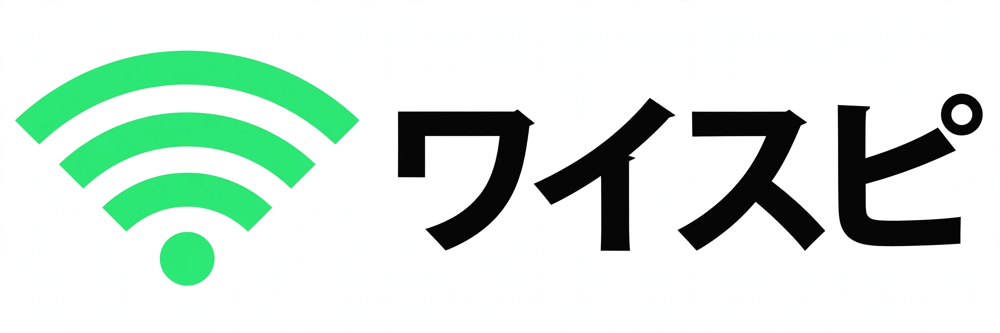
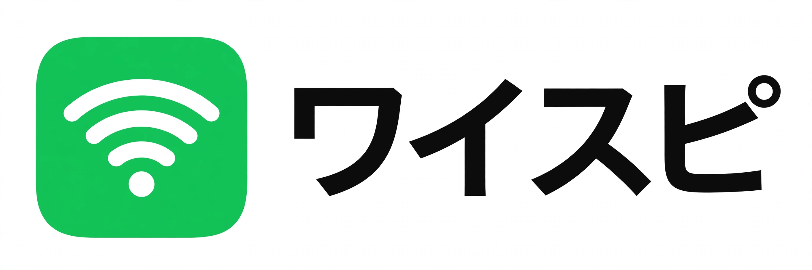
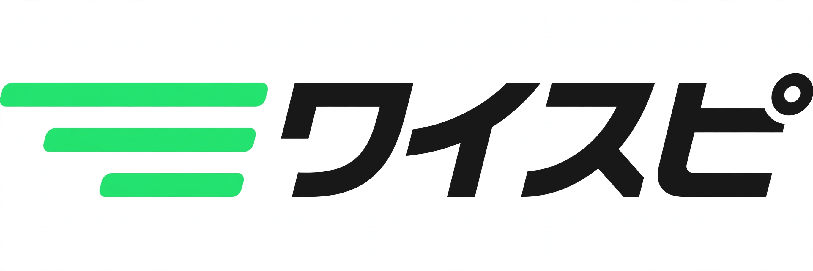
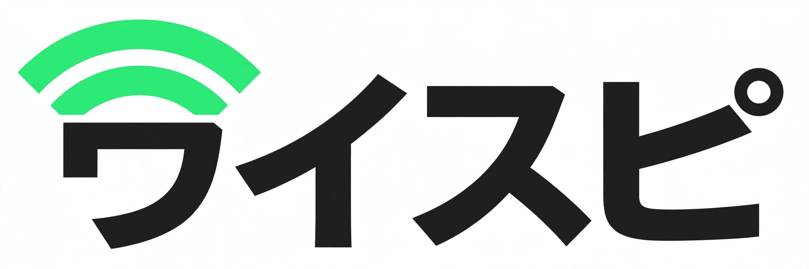
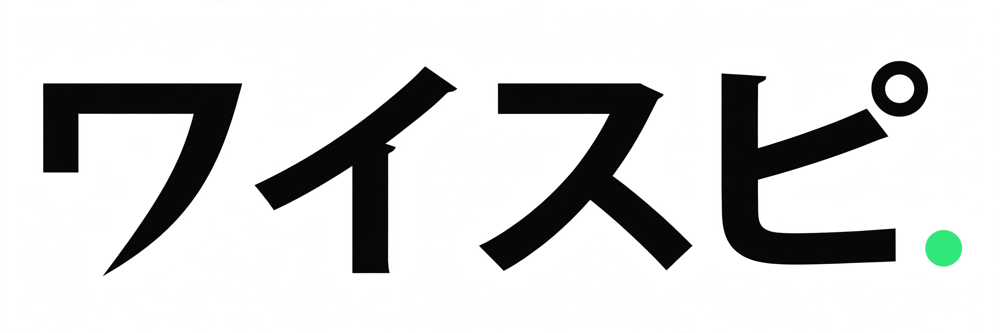

元の4番ワイスピ／ストリートタイポ（基準）

第1ラウンドの選出案。極太・傾斜・角字形のストリートタイポ＋小さな電波ドット。色：黒＋蛍光グリーン。今回の5案はフラットな方向で組み直したものです。
1ワイスピ／Wi-Fiアーク＋太字

ベタ緑のWi-Fiアーク（3本線＋ドット）を左に置き、黒の極太カタカナを横組みにした、ピクトグラム＋タイポの王道構成。
2ワイスピ／アプリアイコン型

緑ベタの角丸スクエアに白抜きのWi-Fiマークを収めたアプリアイコン型。アイコン単体でも使える形＋黒文字の横組み。
3ワイスピ／スピードライン

速度を平たい横線3本の幾何学で表し、少し傾斜した極太タイポと組み合わせた案。速さの印象を最小限の線で出した形。
4ワイスピ／タイポ統合

「ワ」の上にWi-Fiアークを載せて文字と一体化させたタイポ中心の案。マークを別に置かず、字形そのものがロゴになる形。
5ワイスピ／ドット1点

黒ベタの極太タイポ＋語尾に緑のドット1点だけの最小構成。装飾を極限まで削った、いちばん静かな案。